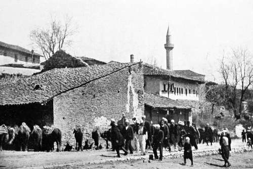

VI. An Interlude With Eagles And Storks In Albania
Description
This section is from the book "Bird-Hunting Through Wild Europe", by R. B. Lodge. Also available from Amazon: Bird-Hunting Through Wild Europe.
VI. An Interlude With Eagles And Storks In Albania
The daily sight of a pair of Sea Eagles harrying the ducks and Coots on Durazzo lagoon induced us to spare a couple of days searching for their nest in a neighbouring forest. At this time of year the roads or tracks through the forests are in a dreadful state. As we plodded along, plastered with mud from head to foot, I wondered sometimes how the horses could keep going at all. B--, however, assured me that the ground was better than he had ever known it-at this time of year, and that the last time he had passed that way for Woodcock it had been ever so much worse. There was an abundance of bird life as we proceeded through the forest. Hoopoes, Rollers, and Golden Orioles had now arrived, and the harsh scream of the Jay resounded through the forest glades as at home. Nightingales sung lustily in every direction, and the voice of the Turtle was heard in the land. Blue Tits and Great Tits appeared to be of much brighter colours than at home. Birds of prey flew past occasionally; amongst others a male Goshawk and a young Imperial Eagle were identified as we rode along.
There was also a small bird, of sober colouring, whose note was astonishingly loud and strong, starting off suddenly like an explosion of fireworks. I had a suspicion it was the Penduline Tit, but never settled the point to my satisfaction. Either it was met with when we were travelling or else when we were intent on more important game, and couldn't attend to it.
There was such a variety of attractions that once, not looking where I was going, as I should have done, and my horse taking a short cut under an overhanging bough, I was swept ignominiously out of the saddle. I generally rode a sturdy little black horse belonging to B--, which played me many a trick, and was brimful of life and devilment. He had been ridden chiefly by Marco before my arrival, and for some time I could not overcome his habit of keeping behind B--. It was most exasperating to ride through the town at the heels of his horse, and without a whip it was almost impossible to keep him level for more than a minute or two. B--'s horse was, too, a very quick ambler, a pace much prized in these countries where so much travelling has perforce to be done at a walking pace. The Black pretended to be unable to keep up, and I was alternately dropping astern and making spurts to catch up. All this was very annoying, so one day I unpacked an old pair of spurs that have seen service in many parts of the world and put them on, and the next time he tried his usual tricks I let him know they were for use and not for ornament. After that I always wore them, and I found he was perfectly well able to keep up with the other horse ; and when he tried to carry on his games in the narrow streets of the town, as he generally did, he was soon brought to see the error of his ways. He was so full of tricks that I always called him the 1 Little Black Devil,' until one day I thought of asking if he had a name, and if so, what it was. I was told ' Shaitan,' which means Satan, so that unconsciously I had given him his rightful name.
But he was an excellent horse, as sure-footed as a cat and as strong as a bullock. I have ridden him ten hours a day over terrible country, and he has been perfectly fresh and as full of mischief at the end of the day as he was at the beginning. I have often had to give a lead over a nasty ditch or bad crossing where the horses of native guides had refused to go, and have ridden up and down steep slopes where the guides have been obliged to dismount and walk.
The grey which B--always rode was not so strong as Shaitan but equally game, and equally sure-footed, and the pleasantest and easiest horse to ride I have ever been on. What splendid gallops I have had on both of them! and what glorious days of wild, free life through forest and hillside and marsh we have had together!-days long to be remembered with delight, mingled with regret at the unlikelihood of ever meeting again. For B-has gone, transferred to the United States;1 his two horses have been sold ; and poor old Nero, our constant companion, is dead.
After a long search, at last we found a large nest which B--remembered having seen when Woodcock shooting, and sure enough it was occupied by a pair of Sea Eagles, presumably our friends of the lagoon. It was placed high up an immense silver poplar, a very favourite tree with large birds of prey, and in it we could see the head and neck, and presently nearly the whole body, of a nearly fledged young bird. This was on the 20th of April.
I photographed this young bird, but without much hopes of a very successful result, for there were many leaves of the tree in the way, which moved about in the high wind, besides which the surrounding trees made it impossible to get a clear view. Some of the smaller ones we cut down, utilizing their branches in making a cover over the camera, but all the disturbance thus made rendered the return of the parent Eagles very improbable. Though we waited seven hours, terribly tormented by mosquitoes the whole time, they never came to the nest, but we could see them soaring overhead, and flying in great circles over the forest. In these evolutions they were constantly pursued by a pair of Ravens, which bullied them most persistently, making all the time a great outcry. They had themselves in all probability a nest of young somewhere in the neighbourhood, though we did not succeed in finding it. It was an extraordinary sight to see the great Eagle flying away from the Ravens, and by dodging and turning doing its best to evade pursuit, without attempting once to retaliate or to defend itself.
1 While this book is going through the Press, comes an invitation to meet him on his way back from the States and join him in a foray among the Chamois, Trout, and Eagles of the Carpathians, with the chance of photographing a Lammergeier.
We slept that night in the house of the proprietor of the forest, who was away from home ; but as he was a friend of B--'s, who knew the house and the servants in charge well, that made no difference, except that we had to sleep in our clothes on some couches, and to take our chance about food. However, Marco got some eggs for us, and with milk and maize bread we did pretty well.
The house, being in such a lonely place, was provided with a watch-tower at one corner. This was loopholed all round so as to be defended from an attack from any quarter, while the windows were fitted with iron, bullet-proof shutters, which we were careful to close as soon as we had lighted the lamp in the evening. These precautions were not unnecessary, for B--told me how on a former visit the robbers, who infest all these forests, had stolen all the horses during the night and had got right away with them. They were recovered, however, some days later, after an interchange of rifle-shots.
Very early in the morning we turned out and proceeded again to the nest. As we had expected, the Eagles had left to hunt for food ; and about eight o'clock one of them returned to feed the young bird, which was evidently getting restless and hungry. I just succeeded in exposing the plate, which was all ready, before the Eagle disappeared into the nest, shortly afterwards leaving by the other side. But, as I feared at the time, all the photographs at this nest were useless, owing to the movement of intervening branches and leaves. The nest proved to be full of skulls and bladebones of sheep, goats, and a calf, showing that the Eaglet, which was very nearly ready to leave the nest, had been largely brought up on carrion.
On returning to the house I investigated the nest of a White Stork in the courtyard. It was placed on the top of an old stump of a dead tree, at no height, but exceedingly rotten and shaky. Just as I reached the nest it gave a loud crack, and all the bystanders shouted out that it was going to fall. However, as I was there, and as it was the first Stork's nest I had ever been able to get at without offending the owners, I stuck to it and burrowed through the bottom of the nest with one hand, it being impossible to get at it in any other way. I could feel four eggs, which I took. They were white and smooth, and smaller than I had expected, judging from the size of the birds. I had been careful before going up to ascertain if I could take the eggs without upsetting the superstitions or prejudices of the people. There were dozens of Tree Sparrows in the outside sticks and underneath the nest of the Storks. I wished afterwards I had taken some of their eggs, but at the time I was too anxious to reach firm ground safely to bother about them. I was surprised to see that the old Stork did not desert the nest, but came back very soon afterwards and went on sitting as though nothing had happened. I concluded that I must have missed an egg, or perhaps two, and as I heard later that they had brought off a brood all right, this was probably the case, or else they laid again.
It is a most difficult thing to take Storks' eggs. They are exceedingly common, and I have seen hundreds of their nests in Holland, Denmark, Spain, Hungary, Roumania, Albania, and Montenegro. But as they are almost invariably on or near houses, the owners of which regard them with much affection or superstitious regard, it is nearly always a matter of impossibility to take the eggs. Once, I remember, in Jutland, a friend who was with me asked a farmer for permission to mount a ladder, only to look into a Stork's nest on the roof, and was very decidedly refused.
Mohammedan Funeral
In Spain, it is true, I have occasionally seen nests on pine- and cork-trees in the forests, but always on large trees difficult to climb, and at the time there were young birds in the nests. In Spain I do not think the people pay much regard to them, merely considering them useful in eating locusts, mice, and even rats and snakes; but in Holland and Denmark it would be very unsafe to disturb them, and even more dangerous in Mohammedan countries, where the people look upon them with peculiar reverence.
Continue to:
- prev: The Quest Of The Pelican : Albania. Part 10
- Table of Contents
- next: VIII. The Search After The Great White Heron